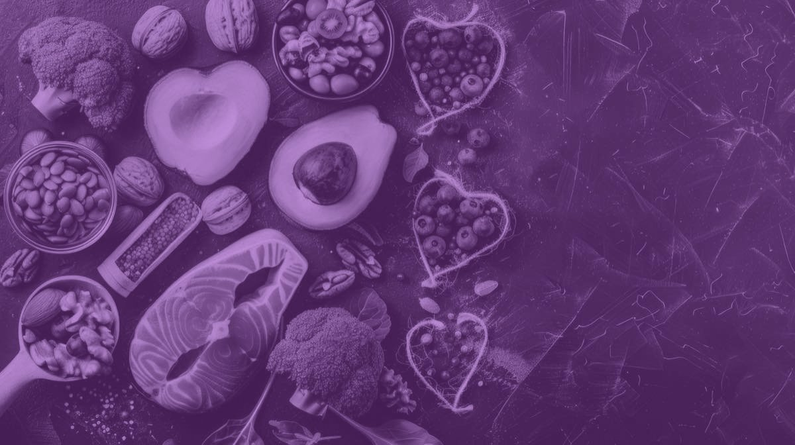
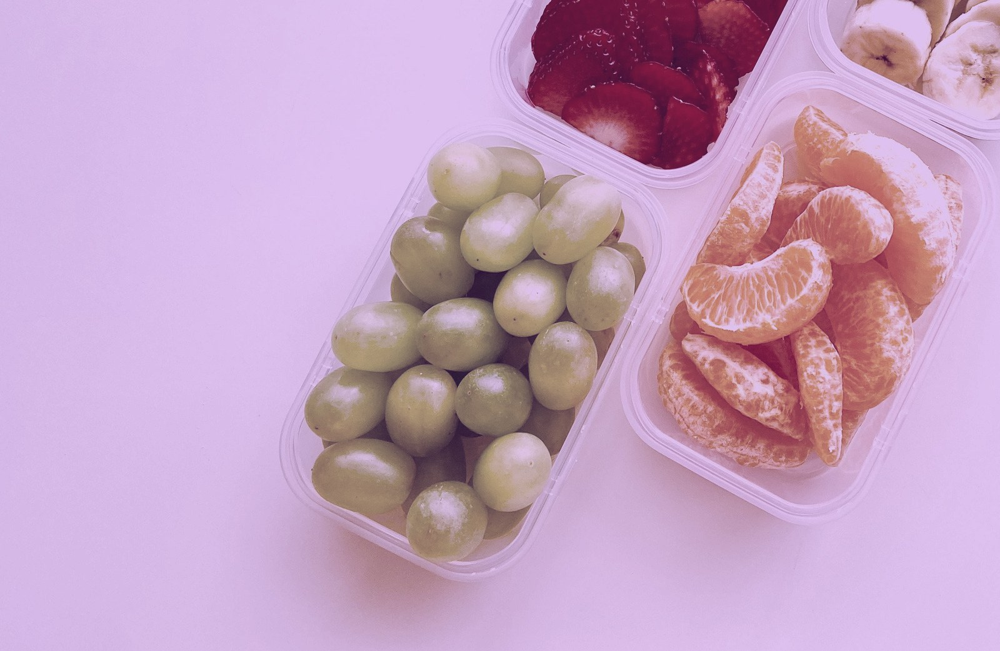

Co dnes udělat pro zdraví, které budete potřebovat za deset, dvacet a třicet let.
Mgr. Ing. Tereza Vágnerová, Ph.D.
Proč investovat do zdraví
Stárnutí je nejsilnějším rizikovým faktorem většiny chronických onemocnění.
Biologické změny, které jejich riziko zvyšují, se kumulují desítky let před prvními příznaky. Proto má prevence smysl už ve třiceti.
02
Délka versus kvalita
Ženy se dožívají déle. Delší část života ale prožijí ve zhoršeném zdraví.
Kohortová studie
34,1 let
Zbývající life expectancy
česká žena, která se dožila 50 let
Menopauza 51,4 (medián)
62,6 healthy life years at birth
17,9 roku s omezením
Naděje dožití žen v ČR je 83,2 roku. Nejde jen o délku života. Jde o to, kolik z těchto let prožijeme ve zdraví.
Eurostat 2024, ČR
03
Část první
Medicína ženy dlouho nestudovala.
Důsledky vidíme dodnes. U řady oblastí máme méně dat o rozdílech mezi ženami a muži, o optimální léčbě i o prevenci u žen.
Co říkají výzkumy
Ženy byly z klinických studií systematicky vylučovány přibližně do roku 1993.
1940–70
Ženy jsou z klinických studií téměř vyloučeny. Důvod: obavy z těhotenství a z „nestabilních hormonů“.
1977
FDA zakazuje účast žen ve fertilním věku v raných fázích klinických studií.
80. léta
Většina studií, včetně kardiovaskulárních, onkologických a hormonálních, jen s muži.
1990
Report National Cancer Institute o vlivu diety na estrogenový metabolismus a jeho souvislost s rakovinou prsu a dělohy. Všichni účastníci byli muži.
1993
NIH Revitalization Act. Zahrnutí žen do federálně financovaného výzkumu je povinné.
National Cancer Institute, 1990 · NIH Revitalization Act, 1993 · podreprezentace přetrvává v kardiologii a farmakokinetice
05
Předpoklad, který to způsobil
Ženy nejsou malí muži.
Argument doby říkal, že muži a ženy se fundamentálně neliší. Jediným rozdílem jsou „otravné hormony“, a nejlepší způsob, jak studovat ženy, je proto studovat muže.
Shrnutí dobové argumentace, proč ženy ve studiích chyběly
06
Rozdíly mezi pohlavími
Infarkt u ženy nemusí vypadat stejně jako u muže.
Kohortová studie
U mužů
U žen
Kde vzniká
Pláty ve velkých koronárních tepnách hned po odstupu z aorty.
Častěji difuzní mikrovaskulární postižení v malých cévách hluboko ve svalovině srdce.
Typický obraz
Uzávěr přední sestupné větve bývá fatální („widow maker“).
Narušený endotel a mikrocirkulace, bez jednoho velkého plátu.
Jak se hlásí
Bolest na hrudi je nejčastějším příznakem u obou.
Navíc častěji dušnost, nauzea, únava, závratě, bolest čelisti či zad. Proto častěji opožděná diagnóza i léčba.
07
Část druhá
Ženská fyziologie se mění v průběhu cyklu i života.
Kolísání a dlouhodobé změny pohlavních hormonů zasahují daleko za reprodukci. Ovlivňují metabolismus, termoregulaci, imunitní systém, spánek i regeneraci. Jejich projevy jsou výrazně individuální.
08
Premenopauzální cyklus
Cyklus trvá 24 až 38 dní a má tři fáze.
24–38
dní
Folikulární fáze
přibližně den 1–13
Rostou a dozrávají folikuly. Estrogen postupně stoupá, progesteron zůstává nízký.
Ovulace
přibližně den 14
Vrchol estrogenu. Subjektivně bývá nejlepší výkon.
Luteální fáze
přibližně den 15–28
Progesteron stoupá a drží se vysoko. Trvá 12 až 14 dní.
09
Celoživotní cyklus
Reprodukční stárnutí je kontinuum, ne série náhlých zlomů.
Reprodukční období
Postmenopauza
102030405060708090100 let
Puberta první menstruace ~13 let
Reprodukční období premenopauza, nejdelší fáze
Perimenopauza začátek ~47 let, trvá 4,5–8,5 roku
Postmenopauza od menopauzy, medián 51,4 let
10
Prevence · Staging STRAW+10
Menopauza je konkrétní bod v čase. Přechod trvá několik let.
Staging podle klinických kritérií
Pozdní repro
Časná peri
Pozdní peri
Postmenopauza
Cyklus působí pravidelně, mění se ale jeho délka.
Přetrvávající rozdíl ≥ 7 dní v délce po sobě jdoucích cyklů.
Pauza 60 a více dní.
Menopauza je určena retrospektivně po 12 měsících amenorey (po poslední menstruaci).
Kritéria stagingu dle ESE Clinical Practice Guideline 2025 a NICE NG23, 2026
11
Fyziologie přechodu
Nejde „jen“ o pokles hormonů. Jde o ztrátu předvídatelného hormonálního vzorce.
Longitudinální hormonální data
Reprodukční období · idealizovaný cyklus
Perimenopauza · záznam jedné ženy
estradiolprogesteronFSHLHinhibin
Jednorázové stanovení hormonů perimenopauzu obvykle nepotvrdí ani nevyloučí. Diagnóza je u žen především klinická. · Tvar křivek dle záznamu Hee J et al., Maturitas 1993;18:9
12
Menstruační cyklus
Odborný konsenzus
Pravidelný menstruační cyklus je jedním z projevů zdravé funkce reprodukční osy.
Nevysvětlená absence menstruace v reprodukčním věku není „optimalizace“. Může být známkou nízké energetické dostupnosti nebo endokrinní poruchy a při dlouhém trvání mít významné zdravotní důsledky.
13
Co se děje v první polovině cyklu
Tělo se po menstruaci regeneruje a připravuje na ovulaci.
Kohortová studie
Síla a výkon
Střední až pozdní folikulární fáze a ovulace jsou mírně výhodnější pro sílu. Estrogen působí antikatabolicky a podporuje syntézu svalových bílkovin. Vhodné období pro progresi zátěže a pro náročnější kognitivní úkoly.
Spánek
Pozdní folikulární fáze je v průměru klidnější období, méně probouzení a méně nespavosti. Rozdíly jsou větší v kvalitě spánku než v jeho délce.
Metabolismus
Vyšší inzulinová senzitivita v periferních tkáních i v mozku. Změna je malá, ale konzistentní. Tělo efektivněji využívá glukózu.
Cave: vysoká interindividuální variabilita. Platí vzorec, ne předpis.
14
Jak podpořit výživou cyklus
Základ je dostatek energie, ne dokonalý jídelníček.
Odborný konsenzus
Energie. Ne pod 30 kcal/kg tukuprosté masy za den. Pravidelný cyklus vyžaduje dostupnou energii.
Bílkoviny 1,2–1,6 g/kg, podle stavu až 2,2 g/kg. Maximální efekt sytivosti vrcholí už u 1,2 g/kg. Nejsou samospásná živina ani hlavní zdroj energie.
Sacharidy 45–55 % energie. Tělo je v této fázi využívá efektivněji (regenerace).
„Proestrogenní“ potraviny jako lněná semínka nebo kimchi účinnost ve studiích neprokázaly, ale jistě neuškodí.
15
Luteální fáze v praxi
V druhé polovině cyklu jde tělo do jiného režimu. Vyhovte mu.
Odborný konsenzus
Výživa
Bílkoviny spíše u vyšší hranice 1,2–1,6 g/kg. Zdravé tuky: ořechy, semena, avokádo, olivový a lněný olej, tučné ryby. Komplexní sacharidy stabilizují glykemii.
Trénink
Některým ženám prospěje nižší intenzita nebo frekvence a důraz na regeneraci. Dbejte na tekutiny, při silném pocení na elektrolyty.
Spánek
Relaxační rutina před spaním, pravidelný režim a chladnější ložnice, protože tělesná teplota je vyšší.
16
Při menstruaci
Nastavení stravování je vysoce individuální. Jediná „dieta pro cyklus“ neexistuje.
Mechanistické
Z jídla
Vitamin D a Ω-3 MK · tučné ryby (sardinky), žloutky, lněné semínko, vlašské ořechy
Magnesium · ořechy, dýňová a slunečnicová semínka, celozrnné, kakao
Vápník · zakysané výrobky, sardinky s kostí, mák, sezam, minerální vody
Železo při silné menstruaci nebo nízkém příjmu, s kontrolou Hb a ferritinu
Případná suplementace
Drmek obecný normalizuje luteální fázi, zmírňuje PMS a napětí v prsou
Kurkumin působí protizánětlivě a analgeticky
Inositol pomáhá u PMS, PMDD a PCOS
Kreatin monohydrát zvyšuje fyzický i kognitivní výkon
Berberin snižuje lačnou glykemii a upravuje lipidogram
Ashwagandha zlepšuje hladiny stresových hormonů a sexuální funkce
Vynechávání jídel, redukční diety a nízký příjem antioxidantů naopak zvyšují pravděpodobnost menstruačních křečí.
17

Výživa a srdce
Kohortová studie
Srdce chrání kvalita potravin, ne volba mezi nízkým příjmem sacharidů a nízkým příjmem tuků.
Co se srovnávalo
Nízkosacharidové a nízkotukové vzorce stravování, jejich metabolomické indexy a riziko koronární nemoci.
Co z toho vyšlo
Zdravé verze obou vzorců vedly k příznivějšímu kardiovaskulárnímu profilu a nižšímu riziku.
Co s tím v praxi
Otázka „kolik sacharidů“ je druhořadá. První je složení jídelníčku.
Wu Z. et al., Metabolomic Indices and Coronary Heart Disease, J Am Coll Cardiol 2026
18
Část třetí
Co se mění s věkem, nejen s cyklem.
Energetický výdej, svalová hmota a síla, spánek. Tři věci, které se mění pozvolna a dají se ovlivnit dřív, než se projeví.
19
Energetický výdej v průběhu života
Metabolismus se ve středním věku nezastaví.
Kohortová studie
20–60 let
Výdej zůstává stabilní, a to i během těhotenství.
0,7 %
pokles ročně po 60. roce života
26 %
o tolik je výdej v 90 letech nižší než ve středním věku
Pontzer H. et al., Daily energy expenditure through the human life course, Science 2021
20
Sval, síla a výbušnost
Síla mizí rychleji než svalová hmota.
Kohortová studie
0,5–1 %
svalové hmoty ročně
1–3 %
svalové síly ročně
3–4 %
svalové výbušnosti ročně
Mezi 30. a 40. rokem pozvolna, po 40. a 50. roce výrazněji. Síla ubývá 2 až 5× rychleji než hmota, výbušnost ještě rychleji.
21
Proč na svalu záleží
Sval nedrží jen výkon. Drží držení těla, jistotu v pohybu i intimitu.
Odborný konsenzus
Stabilita
Tělo působí jako korzet: stabilizační funkce hlubokého stabilizačního systému.
Bolest a jistota
Méně chronických nespecifických bolestí při pohybu, vyšší subjektivní síla a obratnost. To koreluje se sníženým strachem z pádu.
Pánevní dno a intimita
Trénink pánevního dna zlepšuje touhu, vzrušení, lubrikaci a orgasmus, redukuje bolest. Přispívá ke stabilitě SI kloubu a kyčle, ke kontrole pohybu, k sebevědomí a body image.
PFMT, trénink svalů pánevního dna
22
Spánek · doplňky
Doplňky pomáhají u mírných až středně závažných obtíží.
Mechanistické
Nebo v kombinaci s jinou terapií a při nápravě nutričního deficitu. Doplněk nenahradí režim.
Látka
Na co míří
Jistota
Ashwagandha
Snížení kortizolu, stres a úzkost. Přes zvýšení GABA může zlepšovat i spánek.
Melatonin
Kvalita spánku, zejména u osob s poruchami spánku.
Magnesium bisglycinát
Podpora hlubokého spánku a svalové regenerace.
L-glycin
Snižuje bazální tělesnou teplotu a usnadňuje usnutí.
Drmek obecný
Přes dopaminové receptory v hypofýze snižuje prolaktin. Může nepřímo ovlivnit luteální fázi.
23
Spánek · režim
Prioritizace a zachování kvality spánku za všech okolností.
Odborný konsenzus
01
Relaxační rutina před spaním. Dechová cvičení, autogenní trénink.
04
Chladná ložnice. Zabránit přehřátí v noci.
02
Pravidelný čas ulehnutí, i o volných dnech.
05
Bez alkoholu před spaním, ideálně vůbec.
03
Práce se světlem. Ráno na slunce, večer omezit modré světlo.
06
Hlavní jídlo přibližně 3 hodiny před ulehnutím.
24
Spánek a složení těla
Stejný úbytek na váze. Úplně jiný výsledek.
Randomizovaná studie
5,5 h spánku
14 dní
0,6 kg
2,4 kg tukuprosté hmoty
8,5 h spánku
14 dní
1,4 kg tuku
1,5 kg tukuprosté
úbytek tukové hmoty
úbytek tukuprosté hmoty
Celkem 2,9–3,0 kg v obou skupinách.
Dominový efekt. Spánková deprivace narušuje stravování a mění tělesnou kompozici: hubne se ze svalu, ne z tuku.
300 kcal
navíc denně při spánkové deprivaci
30–60 %
žen ve středním věku má poruchy spánku, 15–25 % splňuje kritéria insomnie
Nedeltcheva et al., Ann Intern Med 2010, randomizovaná zkřížená studie, 1450 kcal, 33 % deficit · při příjmu ad libitum trojnásobný nárůst abdominálního tuku
25
Pre a perimenopauzální období
Norma není univerzální. Je individuální.
„Norma“ není obecné fixní číslo, ale individuální biologický rytmus. Cílem není mít ideální křivku hormonů, ale rozumět své oscilaci a tomu, jak na ni tělo reaguje.
Využijte technologie. Pozorujte svůj cyklus s laskavostí a zvědavostí.
Platí i pro perimenopauzální období.
Zapisuj
Délku cyklu a intenzitu krvácení, případně bolest.
Sleduj
Energii, výkon (sportovní i kognitivní), kvalitu spánku, náladu, libido, chuť k jídlu. Ideálně přidej bazální teplotu, klidový tep a HRV.
Porovnej
Cykly mezi sebou. Ne s někým jiným.
26

Část čtvrtá · Praktická doporučení
S čím mohu začít zítra?
Praktické kroky, které se dají zavést do běžného dne a dlouhodobě udržet.
27
Nástroj · Plánování a čas
Než začnete plánovat, zjistěte, kde Vám čas skutečně utíká.
Koučovací nástroj
01
Vyberte jeden běžný den. Ne ten nejlepší, ten běžný. Jeden obvykle stačí.
02
Zapisujte po 30 minutách, ideálně jednou za hodinu, aby byla vzpomínka přesná.
03
Nemusí být podrobný. Stačí obraz dne, ne audit.
04
Pak hledejte vzorce a místa, kde čas utíká. Plán se staví na skutečném dnu.
Nástroj dle Precision Nutrition, Planning & Time Use Worksheet, 2019
28
Nástroj · Praxe
Koučovací nástroj
Jedna změna. Taková, kterou zvládnete i v náročném dni.
Místo změny „všeho najednou“ si vyberte jednu konkrétní věc. Opakujte ji, dokud se nestane běžnou součástí dne. Teprve potom přidejte další. Pamatujte: zvyk je silnější než vůle.
Test „velikosti“ návyku
Na škále 1–10: jak jistá jste si, že to zvládnete i ve špatný den?
9–10
Začněte.
≤ 8
Zmenšete krok. Ne větší úsilí. Menší překážka.
K obědu a večeři si přidám alespoň 2 různé barvy zeleniny. · Nástroj dle Precision Nutrition
29
Nástroj · Porce podle ruky
Čtyři míry, které máte „po ruce“.
Koučovací nástroj
Dlaň
Bílkoviny
Porce odpovídá přibližně ploše a tloušťce dlaně bez prstů.
maso, ryby, tofu, řecký jogurt, cottage
Pěst
Zelenina
Objem sevřené pěsti slouží jako orientační míra porce neškrobové zeleniny.
brokolice, paprika, cuketa, květák
Hrst
Sacharidy
Miska vytvořená z dlaně je orientační porce obilovin, luštěnin, brambor nebo ovoce.
rýže, brambory, těstoviny, hlízy
Palec
Tuky
Objem celého palce od kořene ke špičce.
olej, ořechy, semena, ořechové máslo, avokádo
Nástroj dle Precision Nutrition · ruka roste s tělem, proto míra funguje bez vážení
Tekutina · mléko, kefír, neslazené rostlinné mléko, voda
20–30 g
bílkoviny na jednu dávku
Stejný cíl jako u hlavního jídla. V tekutém jídle se na bílkoviny často zapomíná, proto je dávkujeme první.
Sestava dle Precision Nutrition · cíl bílkovin dle ESPEN a ESCEO · míry hrst a palec viz porce podle ruky
31
Co si odnést
Chápat ženské cykly znamená chápat biologii života samotného.
Kontinuita
Každá fáze, od menarché po postmenopauzu, je součástí kontinuity, ne krize.
Přeměna
Cyklus chceme chápat jako proces přeměny, který si zaslouží pozornost a péči.
Výživa
Výživa není jen o makroživinách. Je to informační jazyk, kterým komunikujeme se svými buňkami, hormony a mikrobiomem.
Příprava
Znalost vlastního těla, prevence, doplnění zásob a porozumění rytmu rozhodují o tom, jak hladce projdeme každou další kapitolou ženského života.
32
Závěr
Dlouhověkost nezačíná v menopauze. Začíná dávno před ní, v respektu k sobě.
33
Děkuji za pozornost.
Mgr. Ing. Tereza Vágnerová, Ph.D.
Healthy Longevity Clinic Klinika geriatrie a interní medicíny 1. LF UK a VFN Klinika endokrinologie a metabolismu 1. LF UK a VFN EFAD – European Federation of the Associations of Dietitians